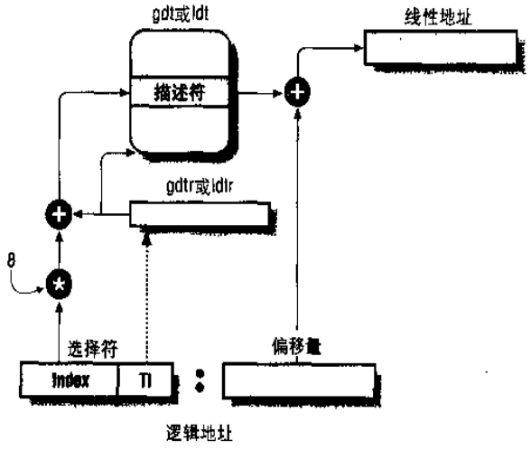
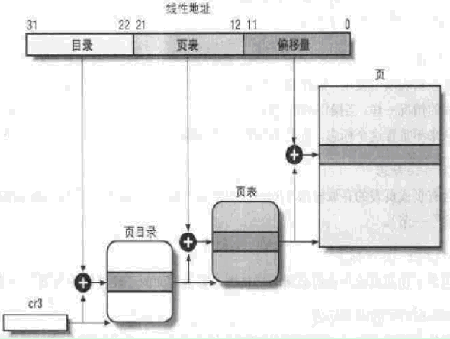

1. 一、分段与分页的比较
1.逻辑地址 -----(分段机制)-----> 线性地址 -----(分页机制)-----> 物理地址
分段机制是必须有的，分页机制可以没有。
如果没有分页机制，线性地址=物理地址
不同的分段机制和不同的分段机制可以随意组合
2.逻辑地址 = 选择符(16位) ： 偏移值(32位)，逻辑地址是二维的
线性地址和物理地址都是32位，是一维的
3.分段的原因：隔绝各个任务的代码、数据和堆栈区域的机制，使多个程序（或任务）可以运行在同一处理器上而不会相互干扰
分页的原因：为虚拟内存系统提供了实现机制，也用于提供多任务之间的隔离措施
4.先执行段级保护，再执行页级保护
段特权级有4级，页只有2级。
超级用户级执行的程序可对任何页面有读写操作，即使是只读页面。
5.保护检查操作与地址变换同时进行，因此处理器不会受到影响
2. 二、分段管理
1.逻辑地址 = 选择符(16位) ： 偏移值(32位)。
段选择符中13位是索引号，因此可以选择8191（0号段不用）个段。
段选择符中一个是区分GDT和LDT，因此准备地说，一个任务最多可以拥有全局段和局部段各8191个。
偏移值有32位，因此一个段最长是4G
只有6个段寄存器，因此只有6个段可供同时访问
2.逻辑地址 -> 线性地址：
（1）段选择符 -----> TI -----> 记录段描述符基址的寄存器
（2）段选择符 ----->Index -----> 段描述符
段描述符地址 = 段描述符基址（寄存器中） + Index * 8B
（2）段描述符 -----> 段首字节的线性地址
（3）段首字节的线性地址 + 偏移值 -----> 目标线性地址

3.段的分类
段（数据段，代码段，系统段（系统段表（LDT段表，TSS段表），门描述符（调用门，中断门，陷阱门，任务门）））
段描述符定义一个段。门描述符存放的是指向一个过程入口点的指针
任务门：任务切换
陷阱门：调用异常处理程序
中断门：调用中断处理程序
调用门：在不同的特权级之间实现受控的程序控制转移
4.LDT是局部描述符表，GDT是全局描述符表
LDT表是一种系统段，其描述符属于系统段描述符。
每个存储LDT表的段，都必须在GDT中有一个段描述符和段选择符
5.6个段寄存器分别是：代码CS, 栈SS, 数据DS, 通用ES,GS,FS
6.
| W/R | 一致性 | |
|---|---|---|
| 代码段 | 在保护模式下不可写 | 一致性或非一致性 |
| 栈段 | 必须可读可写 | |
| 数据段 | 只读或可读可写 | 必须非一致性 |
7.特权级越大，特权越低
CPL：当前特权级，指当前运行的程序或任务的特权级
DPL：描述符特权级，指目标段或门的描述符特权级
RPL：请求特权级，指目标段或门的选择符特权级
3. 三、分页管理
1.分页机制把张线性地址空间和物理空间划分成页面
分页机制是页面-页面的映射，地址-地址的转换
2.页面大小为4K
页面数为2^20 = 2^(32-12)
页表项大小为4B = 32 / 8
页表大小为4MB = 2^20 * 4
3.使用二级页表并没有解决需要4MB来存放页表项的问题，它的作用是：
（1）不需要连续的4B空间
（2）目标表页面必须在内存中，但二级页表可以不在内存中
4.线性地址格式：10位PD+10位PT+12位offset
页表项结构：20位物理地址+12位标志位
页面大小：2^offset = 4K
页框数：2^32 / 2^12 = 2^20
页表项大小：32位 / 8 = 4B
页表总大小：2^20 * 4B = 4MB
一页页表包含的页表项：4K / 4B = 1024
计算公式见Linux2.6虚拟内存管理
5.为什么在页表项结构中记录的物理地址是20位的？
答：因为这个地址与页面大小对齐，因此低12位一定是0，没有意义。这12位用来做标志位
6.线性地址 -> 物理地址
（1）寄存器cr3 -----> 页目录表的基址
（2）线性地址高10位 -----> 页目录表的偏移量
（3）（1）+（2）-----> 页目录表的某一项 -----> 页表的基址
（4）线性地址中间10位 -----> 页表的偏移量
（5）（3）+（4）-----> 页表中的一项 -----> 页面的的基址
（6）线性地址中的低12位 -----> 页面中的偏移量
（7）（5）+（6）-----> 页面中的某个位置，这个位置的地址就是所求的物理地址
（1）（3）（5）的地址都是指物理地址

14.为了减少地址转换所需要的总线周期数，最近访问的页目录和页表会存放在TLB中